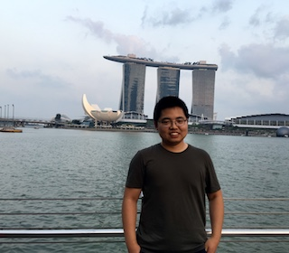

Yale Chang
Yale Chang

My name is Yale Chang (常亚乐).
I am a senior scientist (machine Learning for healthcare) at
Philips Research North America.
I finished my PhD at Northeastern University
under the supervision of Professor Jennifer Dy
in December 2017.
Prior to my PhD, I obtained my Bachelor's degree from
Tsinghua University
in July 2012.
Here is my email:
Research Interests
I'm interested in developing machine learning algorithms to improve healthcare.
The overall objective is to find the right treatment for the right patient at the
right time. The projects I'm working on include
- Disease risk prediction and risk factor identification for acute care
- Patient similarity and disease subtyping for personalized healthcare
- Treatment optimization via contextual bandits and reinforcement learning
I'm also very interested in the following topics in machine learning
- Uncertainty quantification of predictive models
- Domain adaptation, out-of-distribution detection
- Bayesian neural network and deep generative models
- Reinforcement learning
- Causal inference
- Sequence models
Selected Publications
- Annamalai Natarajan, Yale Chang, Sara Mariani, Asif Rahman,
Gregory Boverman, Shruti Vij, Jonathan Rubin
A Wide & Deep Transformer Neural Network for 12-Lead ECG Classification
[Link]
International Conference in Computing in Cardiology (CINC-2020),
Rimini, Italy Sep 2020
(Using the approach proposed in this paper, we won 1st place in
PhysioNet Challenge 2020)
- Saman Parvaneh*, Yale Chang*
Shapelet Discovery for Atrial Fibrillation Detection
International Conference in Computing in Cardiology (CINC-2020),
Rimini, Italy Sep 2020
- Asif Rahman, Yale Chang, Bryan Conroy, Minnan Xu-Wilson
Phenotyping with Prior Knowledge using Patient Similarity
[Link]
Machine Learning for Healthcare Conference (MLHC-2020),
Online August 2020
- Yale Chang*, Jonathan Rubin*, Gregory Boverman,
Shruti Vij, Asif Rahman, Annamalai Natarajan, Saman Parvaneh
A Multi-Task Imputation and Classification Neural Architecture for
Early Prediction of Sepsis from Multivariate Clinical Time Series
[Link]
International Conference in Computing in Cardiology (CINC-2019),
Singapore Sep 2019
(Using the approach proposed in this paper, we won 2nd place in the
hackathon of
PhysioNet Challenge 2019)
- Chieh Wu, Jared Miller, Yale Chang, Mario Sznaier, Jennifer Dy
Solving Interpretable Kernel Dimension Reduction
[Link]
Neural Information Processing Systems (NeurIPS-2019),
Vancouver, Canada, Dec 2019
- Junxiang Chen, Yale Chang, Peter Castaldi, Michael Cho,
Brian Hobbs, Jennifer Dy.
Crowdclustering with Partition Labels
[Link]
International Conference on Artificial Intelligence and
Statistics (AISTATS-2018), Lanzarote, Spain, Apr. 2018
- Adel Boueiz, Yale Chang, Michael Cho, George Washko, Raul San Jose
Estepar, Russell Bowler, James Crapo, Dawn Demeo, Jennifer Dy, Edwin
Silverman, Peter Castaldi
Lobar Emphysema Distribution is Associated with 5-Year Radiological
Disease Progression
[Link]
Journal of Chest (2018)
- Adel Boueiz, Yale Chang, Michael Cho, Dawn Demeo, Jennifer Dy, Peter Castaldi
Machine Learning Prediction of 5-year Progression of FEV1 in the COPDGene Study
[Link]
American Thoracic Society 2018 International Conference
- Yale Chang, Junxiang Chen, Michael Cho, Peter Castaldi,
Edwin Silverman, Jennifer Dy.
Multiple Clustering Views from Multiple Uncertain Experts
[Link]
International Conference on Machine Learning (ICML-2017),
Sydney, Australia,
Aug 2017
- Yale Chang, Junxiang Chen, Michael Cho, Peter Castaldi,
Edwin Silverman, Jennifer Dy.
Clustering from Multiple Uncertain Experts
[Link]
International Conference on Artificial Intelligence and
Statistics (AISTATS-2017), Fort Lauderdale, Florida USA,
Apr 2017
- Yale Chang, Junxiang Chen, Michael Cho, Peter Castaldi,
Edwin Silverman, Jennifer Dy.
Clustering with Domain-Specific Usefulness Scores
[Link]
SIAM International Conference on Data Mining
(SDM-2017), Houston, Texas USA, Apr 2017
- Yale Chang, Jennifer Dy.
Informative Subspace Learning for Counterfactual Inference
[Link]
AAAI Conference on Artificial Intelligence
(AAAI-2017), San Francisco, California USA, Feb 2017
- Adam Ding, Jennifer Dy, Yi Li, Yale Chang
A Robust-Equitable Measure for Feature Ranking and Selection
[Link]
Journal of Machine Learning Research (JMLR-2017)
- James Ross, Peter Castaldi, Michael Cho, Junxiang Chen, Yale
Chang, Jennifer Dy, Edwin Silverman, George Washko, Raul
San Jose Estepar.
A Bayesian Nonparametric Model for Disease Subtyping:
Application to Emphysema Phenotypes
[Link]
IEEE Transactions on Medical Imaging 2017
- Yale Chang, Yi Li, Adam Ding, Jennifer Dy.
A Robust-Equitable Copula Dependence Measure for Feature Selection
[Link]
International Conference on Artificial Intelligence and
Statistics (AISTATS-2016), Cadiz, Spain, May. 2016
- Yale Chang, Kimberly Glass, Yang-Yu Liu, Edwin K.
Silverman, James D. Crapo, Ruth Tal-Singer, Russ Bowler, Jennifer
Dy, Michael Cho, Peter Castaldi.
COPD Subtypes Identified by Network-Based Clustering
of Blood Gene Expression
[Link]
Journal of Genomics (2016)
- Junxiang Chen, Yale Chang, Brian Hobbs, Peter Castaldi,
Michael Cho, Edwin Silverman, Jennifer Dy.
Interpretable Clustering via Discriminative Rectangle Mixture
Model
[Link]
International Conference on Data Minining (ICDM-2016),
Barcelona, Spain, Dec 2016
- Yi Li, Yale Chang, Thomas Vandal, Debasish Das, Adam Ding,
Auroop Ganguly, Jennifer Dy.
Copula Based Covariate Selection in Climate For Statistical
Downscaling
[Link]
International Workshop on Climate Informatics
Boulder, CO, US, 2015
- Peter Castaldi, Jennifer Dy, James Ross, Yale Chang, George
R. Washko, Douglas Curran-Everett, Andre Williams et al.
Cluster Analysis in the COPDGene Study Identified Subtypes of
Smokers with Distinct Patterns of Airway Disease and Emphysema.
[Link]
Journal of Thorax (2014)
Professional Service
Workflow chair of ICML (2018)
Program committee of ICML (2017, 2019 - 2021), NeurIPS (2017 - 2019, 2021), ICLR (2018 - 2021),
AAAI (2019 - 2021), AISTATS (2019 - 2021), JMLR (2018 - 2019), PAMI (2018), IJCAI (2019-2020)
External reviewer of:
NeurIPS (2013 - 2015), ICML (2015), AISTATS (2016), JMLR (2015 - 2016),
AAAI (2014), UAI (2015)